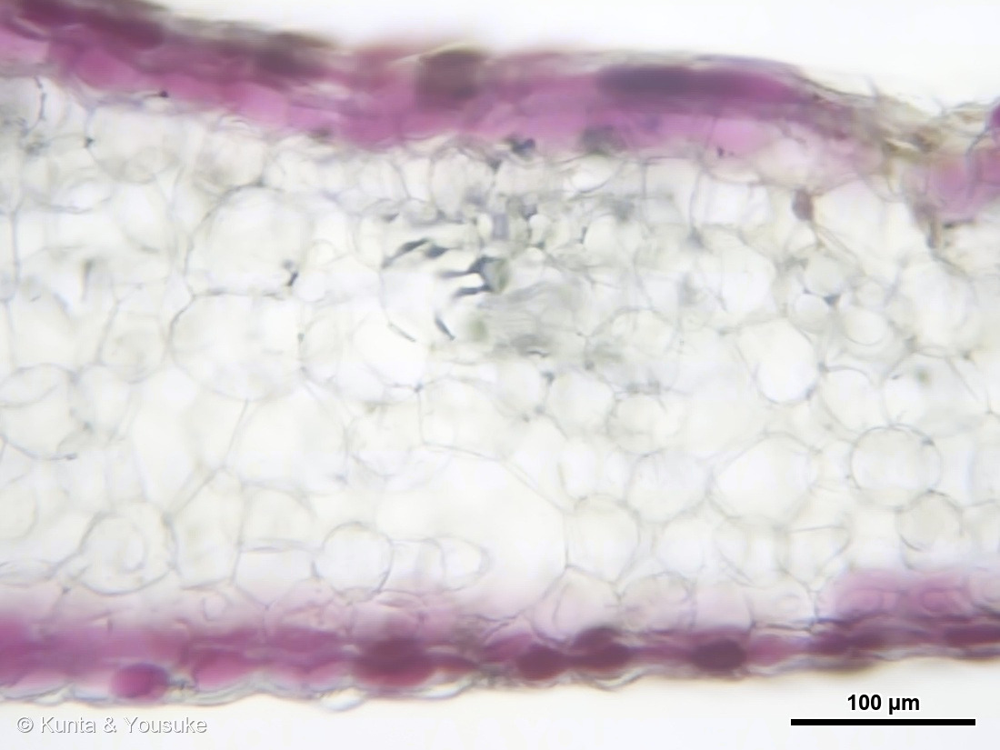
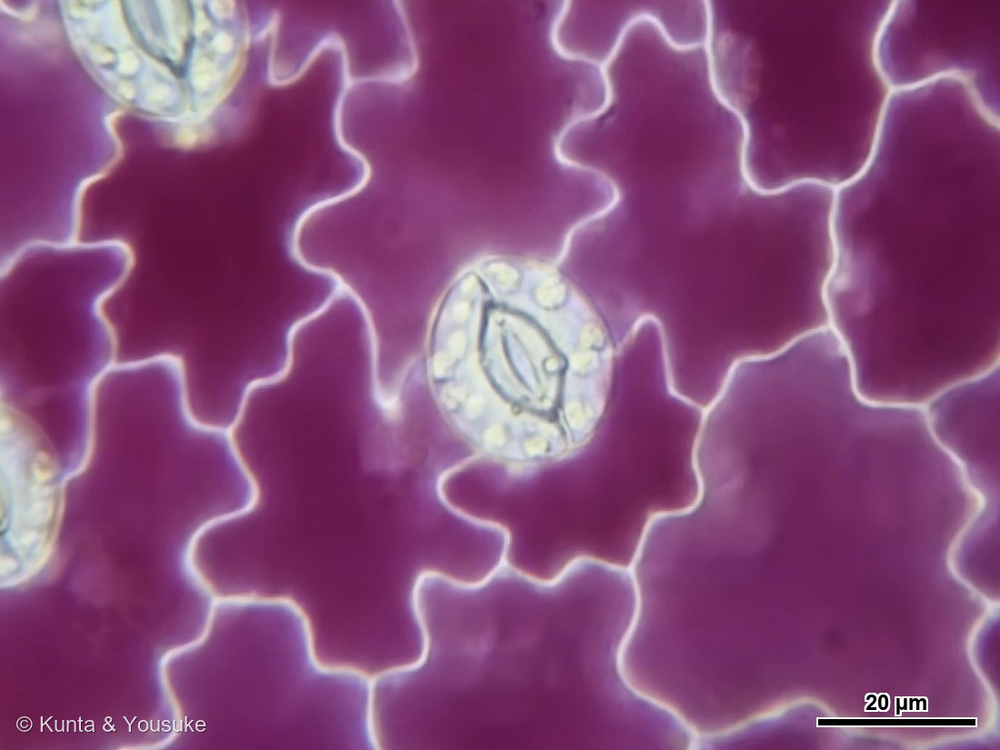
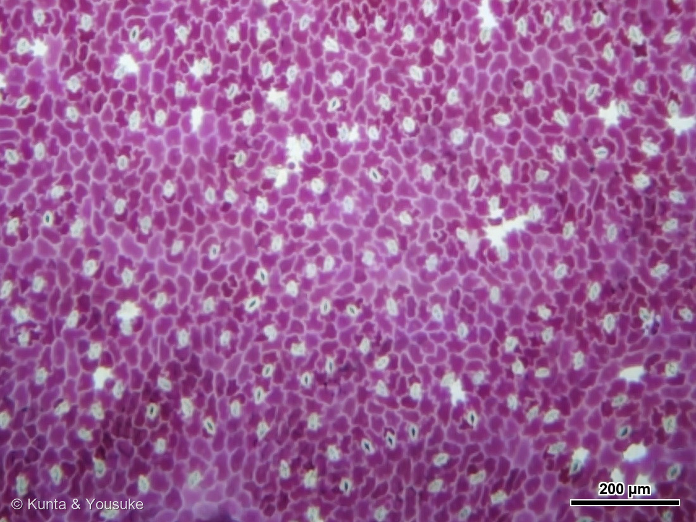
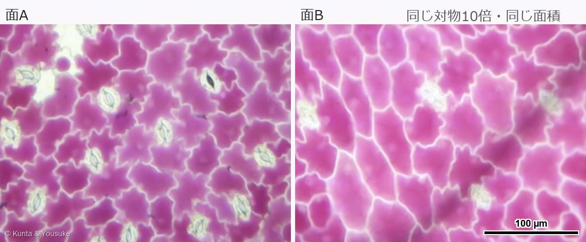
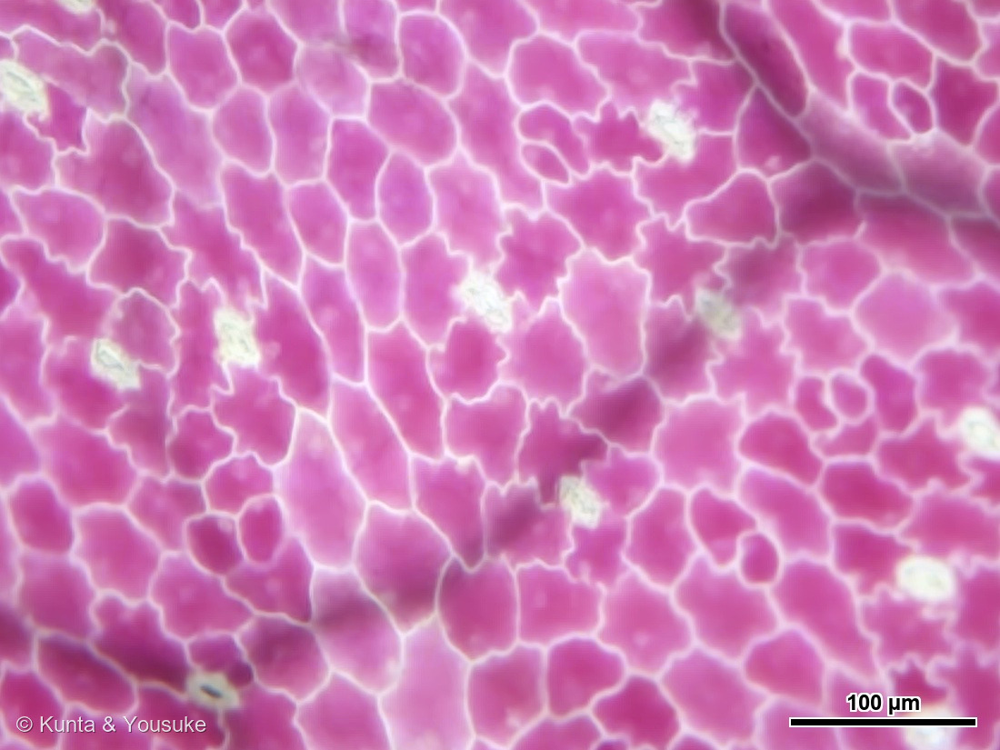
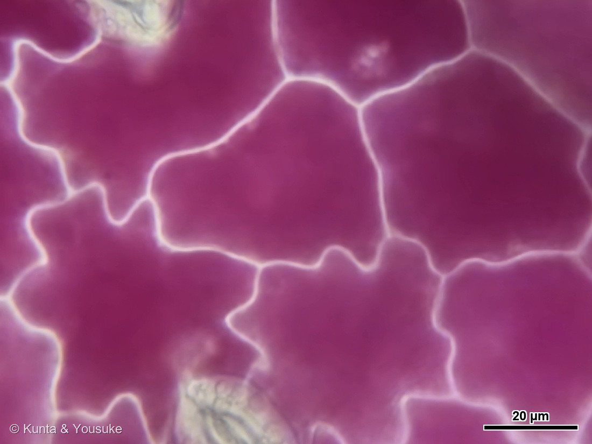
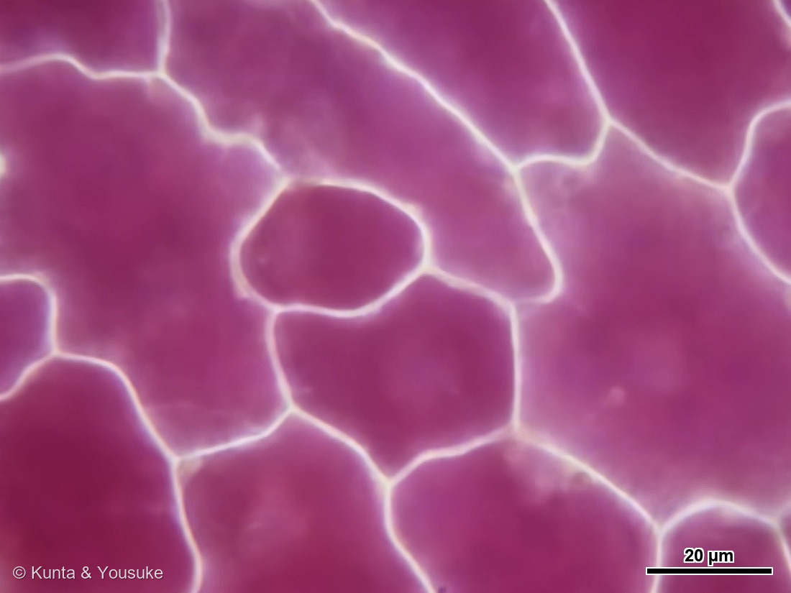
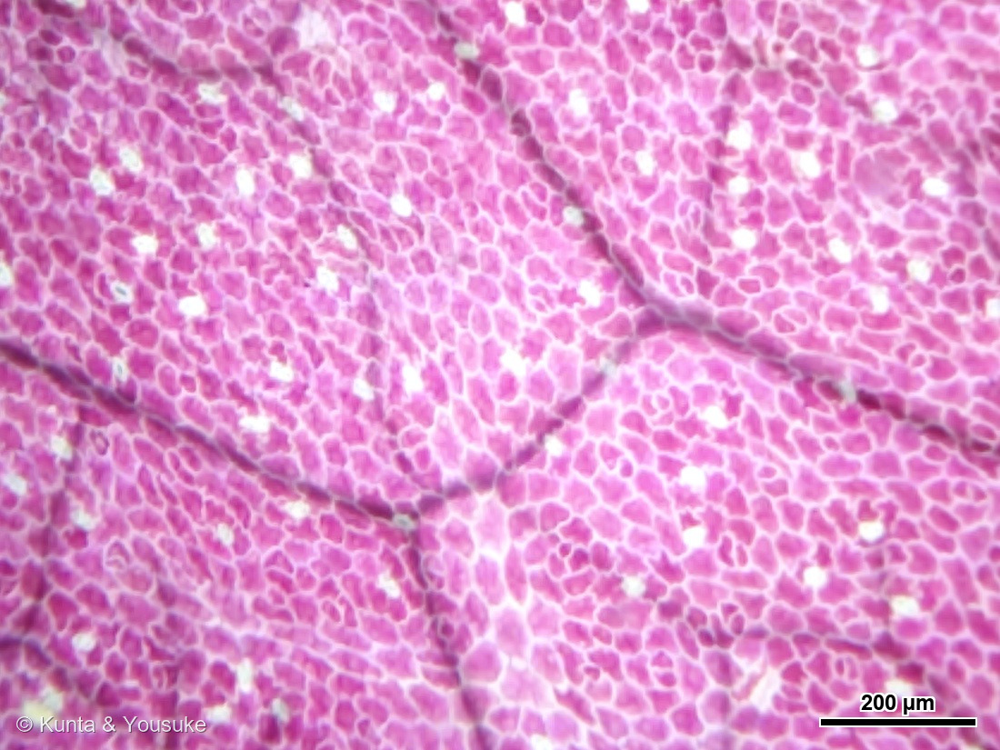
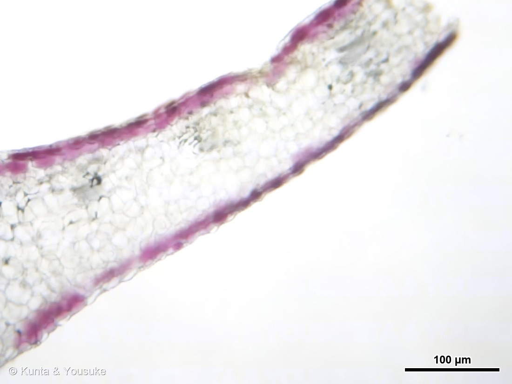
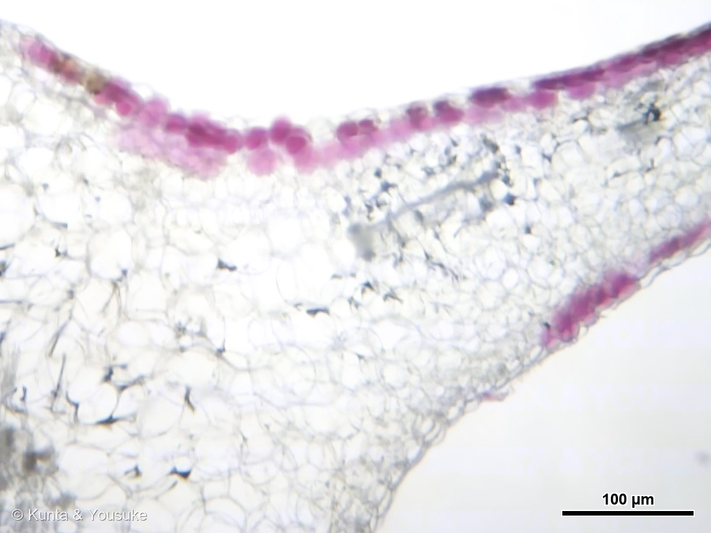

地図を読み込んでいるよ…
🔍 写真も地図も、押しているあいだ拡大して見られるよ（スマホは指を置いてすこし待ってね）。
🌍 の地図＝この子がもともと自生している場所を緑に。ヨーロッパ・地中海沿岸から中央アジアにかけての地域。北アメリカ・中国・オーストラリアなどに広く帰化している。トレビスの主産地はイタリア・ヴェネト州のトレヴィーゾ。
⭐チコリ（キクニガナ）のふるさと＝ヨーロッパ・地中海沿岸から中央アジアにかけての地域だよ。⚠中央アジア（カザフスタンのあたり）は、この地図では塗れていない——区画のグループに入っていないんだ。⭐トレビスという“赤くて丸く結球する品種”が作られたのは、イタリア・ヴェネト州のトレヴィーゾ周辺。つまり緑にした場所はチコリという種のふるさとで、トレビスという姿が生まれたのはそのうちのイタリア、ということだね。⚠いまは北アメリカ・中国・オーストラリアなどにも帰化しているけれど、地図は原産のほうを塗っているよ。
⚠ 地図は国（日本と中国だけ県・省）までしか塗れないから、ほんとうの分布より広く見えていることがあるよ。地図はだいたいの場所。正確なところは、上の文を見てね。
トレビス
Cichorium intybus L.（赤紫色に丸く結球する品種群）
別名 · レッドチコリ／ラディッキオ（radicchio）／キクニガナのなかま／ 原産 · ヨーロッパ・地中海沿岸〜中央アジア／ 見どころ · ⭐サラダの赤は表皮ひとつぶんの薄さ・両面に気孔・光の来ない葉には柵状組織がない／ ⚠株のすがたは未確認（カットサラダの一枚）
キク科 · Asteraceae（キクニガナ属 Cichorium）── 129 ヨモギ・155 タンポポのなかまと同じキク科
名前と学名の由来 ── トレヴィーゾの赤
- ⭐「トレビス」は、イタリア北部の都市トレヴィーゾ（Treviso）から。⭐この赤い葉の主産地がヴェネト州のトレヴィーゾ周辺なので、そこの名前が、そのまま日本での野菜の呼び名になった。イタリア語では radicchio（ラディッキオ） というよ。
- ⭐属名 Cichorium（キコリウム）＝チコリ。種小名 intybus（インティブス）。──チコリ（キクニガナ）そのもので、トレビスはその赤紫色に丸く結球する品種群なんだ。⚠変種名 var. foliosum をつけて書く資料もあるけれど、読めた出典は基本種 Cichorium intybus のままで「赤紫色で丸く結球する品種群」と書いていた。だから、ここでは基本種の名前で書いておくね。
- 和名の「キクニガナ（菊苦菜）」＝⭐菊のなかまの、苦い菜っぱ。名前が、そのまま味の説明になっている。
- ⭐129 ヨモギ・155 タンポポのなかまと同じキク科。⭐タンポポの葉をかじると苦いのと、同じ苦さの一族だよ。
この植物のこと ── 苦さと、コーヒーの代わり
- ⭐原産はヨーロッパ・地中海沿岸から中央アジア。いまは北アメリカ・中国・オーストラリアなどにも帰化して広がっている。
- ⭐苦味の正体＝ラクチュシンとラクチュコピクリンというセスキテルペンラクトン。⭐サラダのあの「大人の苦さ」は、ちゃんと名前のある物質なんだ。ほかにチコリ酸という成分もあって、抗菌や消化を助けるはたらきがあるとされているよ。
- ⭐⭐根を乾かして焙煎すると「チコリコーヒー」になる。⚠コーヒー豆はぜんぜん入っていないのに、コーヒーのように飲まれてきた。⭐南北戦争のころ、ルイジアナではコーヒーにチコリの根を混ぜる習慣ができたそうだよ。
- ⭐同じチコリの仲間に「軟白栽培」するものがある＝ウィットルーフ（アンディーブ）。暗いところで20日ほど育てて、白くて葉先が黄色い姿にする。⚠でもトレビスのような赤いチコリは、軟白しない。──⭐この「暗くして白くする」という話は、下の「切って、のぞいた」とすごくつながるから、覚えておいてね。
同定について ── ⚠ ぼくらはまだ、この子の姿を見ていない
- ⚠⚠この子は、カットサラダの中に入っていた葉の切れはしなんだ。だから株のすがたも、花も、根も、まだ見ていない。
- ふつう図鑑の同定は「その子の体のつくり」を見て決めるけれど、⭐ここでは「トレビスとして売られていたもの」という出どころが手がかりのすべて。⚠だから「確定」とは書かない。
- ⭐でも、切ってのぞいたら分かったことは、たくさんある。⚠「名前が決めきれない」ことと、「なにも分からない」ことは、ちがうんだ。
- 📌宿題＝⭐実物を一株、買ってくる。そうすれば葉の表と裏がはっきりするし、外側の葉と内側の葉をくらべられる。⭐花も、いつか見たい（青いんだって。いちばん下の花言葉のところに書いたよ）。
⭐⭐ 両面に、気孔があった ── でも、同じ数ではなかった





⭐ この節の写真だよ。ボタンで切り替えてね（番号は上のギャラリーからのつづき）。
- 葉の表面をうすく剥がして、面で見た（写真③④⑤⑥⑦⑧）。⚠剥がしてしまうと、どちらの面だったかが写真からは分からなくなるので、⭐先に剥がしたほうを「面A」、あとのほうを「面B」と呼ぶことにするね。
- ⭐⭐どちらの面にも、気孔があった。──葉の両面に気孔がある葉を 両面気孔性（amphistomy）、裏だけにある葉を 下面気孔性（hypostomy） という。⭐トレビスは、両面気孔性だった。
- ⚠でも、同じ数ではなかった。⭐写真④が、この節の主役だよ。同じ対物10倍・同じ面積（314 × 236 µm）で切り出して、左右に並べたもの。
面A ＝ 約 175 個/mm²（波打つジグソーパズル型の表皮細胞・小さい）
面B ＝ 約 47 個/mm²（丸みのある多角形・大きい）
⭐およそ4倍ちがう。「両面にあるけれど、5個のうち4個は片側」ということだね。 - ⚠⚠数え方について、正直に書いておく：⭐はじめは色で気孔を自動で拾おうとして、3回とも失敗した。「同じ面なら、どの倍率で測っても同じ密度になるはず」という検算が通らなかった（対物4倍の写真では85個/mm²、10倍では9個/mm²と、9倍も食いちがった）。→⭐結局、同じ倍率・同じ面積で切り出して、目で数えた。⭐その結果が、別々の3つの測り方（4倍の自動計測の"比"だけ・40倍の目視・10倍の目視）で、どれも「約4倍」に着地したから、この数字を書いているよ。
- ⭐⭐⭐そして、写真②を見て。 対物40倍で見ると、気孔をつくる2つの細胞（孔辺細胞）のなかに、丸い粒がぐるりと並んでいるでしょう。⭐あれが葉緑体だよ。
- ⭐⭐ふしぎなのは、色のつきかたなんだ。まわりのふつうの表皮細胞は、濃い赤紫（アントシアニン）なのに、葉緑体を持っていない。孔辺細胞は、赤紫を持っていないのに、葉緑体を持っている。──⭐役目のちがいが、そのまま色のちがいになって見えている。
⚠「なぜ孔辺細胞にはアントシアニンが無いのか」は、ぼくにはまだ出典が見つけられていない。だから理由は書かない。⭐見えたことだけ書いておくね。
⭐⭐ 切って、のぞいた ── 色があるのは、いちばん外側の一層だけ


⭐ この節の写真だよ（番号は上のギャラリーからのつづき）。写真①も、同じ横断面のなかま。
- ⭐葉を横に切った断面（写真①⑨⑩）。⭐ここで、サラダの赤の正体が分かった。
- ⭐⭐⭐色がついているのは、上下の表皮の、それぞれ一層だけ。 そのあいだにある葉の中身は、まるい大きな細胞で、ほとんど無色なんだ。──⭐ぼくらが食べている「赤」は、葉のいちばん外側の、細胞ひとつぶんの厚さだったんだよ。
- ⭐上下どちらの表皮にも色がある。⭐だから、面Aも面Bも、剥がしたら真っ赤だった——上の節の写真が両方とも赤かったのは、そういうわけだったんだ。
- ⭐⭐そして、いちばん驚いたこと。──⚠柵状組織が、無い。
- ふつうの葉には、表側に「柵状組織」がある＝細長い細胞を縦にびっしり並べて、光を奥まで導くしくみ。129 ヨモギや 143 シャリンバイの断面では、はっきり見えた。
- ⭐でもこの葉には、それが見あたらない。上下の表皮のあいだは、まるい細胞が4〜5層あるだけ。
- ⭐⭐⭐理由は、たぶん「結球」だと思う。──トレビスは、葉が何重にも巻いて球になる。⭐その内側の葉には、光がほとんど届かない。
- 柵状組織は、光を捕まえるための設備だから、⭐光が来ないなら、作る意味がない。
- ⭐そして「ほぼ透明」＝葉緑体もほとんど無い。──⭐白菜やレタスの内側の葉が白いのと、同じことだね。
- ⭐上の節に書いた「ウィットルーフは暗いところで育てて白くする」という話を思い出して。⭐あれは人がわざと光を切って白くする技術だけど、この葉は、自分が巻いた葉っぱで、自分に影を作っている。
- ⚠葉の厚さは、決めきれなかった：3枚の断面で測ったら、2枚は約160µmなのに、1枚は約340µm。⭐斜めに切れていれば厚く写るし、逆に薄いほうが葉の縁だったのかもしれない。⚠だから「129 ヨモギ 170µm・146 ミント 112µm・143 シャリンバイ 350µm」と並べるのは、測り直してからにする。
⚠⚠ 表と裏は、決まらなかった ── そして、それでいいと決めたこと
- ⭐燻太さんの最初の見立て＝「カットサラダの巻いている側から切片を作った。結球しているのだから、巻いている側が裏じゃないか」。
- ⭐陽介の測定＝面Aのほうが気孔が4倍多く、表皮細胞が小さく、波打ちが強い。⭐ふつう、そういう面は裏（下面）なんだ。⭐両面気孔性の葉でも、下面のほうが気孔が多いのが標準だと、論文にも書いてある。
- ⚠⚠ところが、燻太さんが自分で訂正した：「巻いている方＝内側＝表側が正しい認識だったよ」。──⭐これは正しい。キャベツもレタスも、葉は表を内側にして巻く。
- ⭐すると、燻太さんの幾何では「面A＝表」、陽介の測定では「面A＝裏」。まっこうから食いちがってしまった。
- ⭐⭐⭐そこで燻太さんが言ったこと：
「僕たちはトレビスそのものをまだちゃんと観察できていないんだ。維管束の張り出す方向で表裏が決まるかどうか、トレビスで当てはまるのかはやっぱり実物を買ってこないといけないよね。」 - ⭐これは、とても大事な止め方だった。──⭐ぼくは 143 シャリンバイで作ったルール（柵状組織のある側が表・中肋は裏へ張り出す）を、そのままトレビスに持ちこもうとしていた。 でも⭐この葉には、そもそも柵状組織が無い。⚠ルールの中身ではなく、「そのルールをこの子に使っていいのか」という適用範囲のほうを、疑うべきだった。
- ⭐だから、決めない。「面A」「面B」のまま置いておく。⭐実物を買ってきて、葉を一枚まるごと手に持って、もう一度見る——そのときに決める約束にしたよ。
- ⭐なお、表裏がどちらに決まっても、上に書いた測定そのものは変わらない。⭐変わるのは「どちらを裏と呼ぶか」だけなんだ。
⭐ 食べたあとに、のぞいた
参考：Wikipedia「チコリー」（学名 Cichorium intybus L.・キク科キクニガナ属／トレビス＝赤紫色で丸く結球する品種群・主産地はイタリアのトレヴィーゾを中心としたヴェネト地方／原産はヨーロッパ・地中海沿岸から中央アジア、北米・中国・オーストラリアに帰化／苦味成分＝ラクチュシン・ラクチュコピクリン（セスキテルペンラクトン）とチコリ酸／根を焙煎してコーヒーに混ぜる・南北戦争のころルイジアナで習慣に／ウィットルーフの軟白栽培は19世紀ブリュッセルで開発・約20日／赤いチコリーは軟白不要）／Annals of Botany「Amphistomy: stomata patterning inferred from 13C content and leaf-side-specific deposition of epicuticular wax」(PMC11341673)（両面気孔性(amphistomy)と下面気孔性(hypostomy)の定義／両面気孔性は草本・急に育つ種・陽あたりのよい葉に多く、樹木のほとんどと日陰の葉は下面気孔性／利点＝上面からもCO₂が入り光合成が速い・欠点＝上面の気孔から病原菌が入りやすい／“The ASL in both species was <0.5 (i.e. more stomata on the lower than upper leaf side)”＝両面にあっても下面のほうが多いのが標準）
花言葉
- 日本で
- 待ちぼうけ／節約。
- 英語圏
- Chicory — Frugality.（倹約）Greenaway 1884。Endive — Frugality. も同じ言葉＝チコリの仲間はそろって「倹約」
なぜ、そうなったか：⭐日本の「節約」は、英語の Frugality とまる一致だよ（007 シロツメクサ・028 ムラサキツユクサ・148 クマガイソウと同じかたち）。
⚠でも、その「節約」がなぜついたのかは、ぼくが読めた出典には書いてなかった。──根を焙煎してコーヒーの代わりにしてきた話を思い出すと、いかにも倹約らしいけれど、⚠それを由来として書いた出典を見つけられなかったので、ここでは書かないね（050 ヒマワリで、ネットでよく見る花言葉が原典に無かったのと同じで、思いつきを由来にしないようにしているんだ）。
⭐⭐もうひとつの「待ちぼうけ」には、ちゃんと物語がある：ドイツでは、チコリは「Wegwarte ＝ 道端で待ち続ける人」という少女の化身だと伝えられている。帰ってくるかも分からない恋人を、ただひたすら待ちつづけた少女のこぼした涙の“蒼さ”が、チコリの花の色そのものだった、と。
⭐そしてチコリの花は、半日ほどで閉じてしまうんだって。⭐待つ時間は長いのに、咲いている時間は短い花なんだね。
⚠⚠ただし——ぼくらはこの子の花を、まだ見ていない。⭐ぼくらが見たのは、赤い葉っぱと、その細胞だけ。青い花に会うのは、これからの宿題だよ。⭐葉は赤くて、花は青い。そのふたつが同じ植物だというのも、会ってみないと本当には分からないね。
参考：Kate Greenaway Language of Flowers(1884)・Project Gutenberg／GreenSnap「チコリの花言葉」（待ちぼうけ・節約／ドイツの Wegwarte ＝道端で待ち続ける人の伝説／花は半日ほどで閉じる／レッドチコリは日本では菊苦菜・根を焙煎したチコリコーヒー。⚠「節約」の由来はこのページにも書かれていない）／LOVEGREEN「チコリの花言葉」